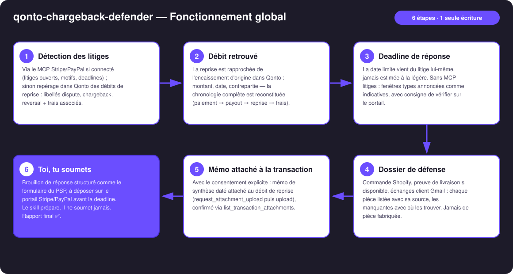
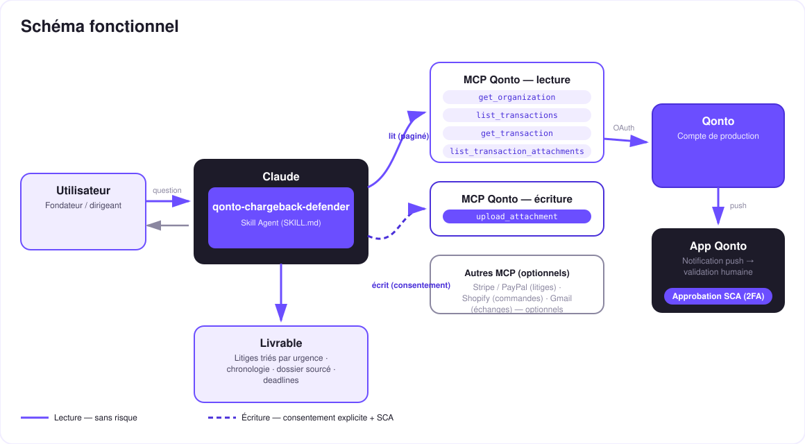

Les litiges de paiement bout en bout : détection, débit retrouvé, dossier de défense sourcé, deadline — toi, tu soumets.
Un chargeback, c'est triple peine : l'argent repris sur le compte, des frais en plus (souvent 15-20 €, indicatif), et un délai court (7-21 jours) — et la plupart des marchands ne répondent jamais. Le skill transforme le compte Qonto en poste de défense :
Via le MCP Stripe/PayPal si connecté (motifs, deadlines réelles) ; sinon débits de reprise repérés dans Qonto : dispute / chargeback / reversal + frais.
La reprise rapprochée de l'encaissement d'origine : chronologie complète paiement → payout → reprise → frais.
Commande Shopify, preuve de livraison, échanges Gmail — chaque pièce avec sa source, les manquantes avec où les trouver.
Mémo de synthèse daté attaché au débit de reprise dans Qonto (upload confirmé) — la transaction porte toute son histoire.
| Prérequis | Détail | Obligatoire |
|---|---|---|
| Compte Qonto production | Le skill s'adapte à toute organisation — get_organization d'abord, zéro donnée en dur | ✅ |
| Pays | Universel : les chargebacks suivent les règles des réseaux carte et des PSP, pas le droit fiscal national — même comportement pour tous les pays Qonto | ℹ️ détecté |
| MCP Qonto connecté | Connecteur officiel (claude.ai / Claude Desktop), login OAuth | ✅ |
| MCP Stripe / PayPal | Source autoritaire des litiges et des deadlines. Sans lui : mode Qonto pur — détection + chronologie + checklist, déjà utile | ⭕ recommandé |
| MCP Shopify · Gmail | Enrichissements du dossier (commande, tracking, échanges) — détectés dynamiquement, annoncés s'ils manquent | ⭕ |

dispute / chargeback / reversal + variantes FR), souvent doublés d'un débit de frais du même PSP le même jouremitted_at, pas settled_at (1-2 jours d'écart)list_transaction_attachments vérifié avant d'annoncer un upload réussi
Le modèle d'intégrité : le mémo attaché est une synthèse datée qui cite les pièces sources (système · identifiant · date · ce que la pièce prouve) — jamais un justificatif fabriqué. Et la soumission de la défense reste humaine : le skill prépare tout, l'utilisateur soumet sur le portail Stripe/PayPal. Jamais présentée comme déposée.
| Motif (reason code) | Ce qui gagne | Où le skill le trouve |
|---|---|---|
| Produit non reçu | Preuve de livraison / tracking « delivered » | Shopify (fulfillment + tracking) |
| Fraude / transaction non reconnue | Adresses facturation-livraison concordantes, client récurrent, historique | Shopify + Stripe (détails de charge) |
| Produit non conforme | Description produit, échanges client, politique de retour proposée | Shopify + Gmail |
| Débit dupliqué / déjà remboursé | Le remboursement déjà émis — l'argument massue | Qonto (transaction de remboursement) + Stripe |
| Abonnement annulé | Date d'annulation vs date de débit, CGV, échanges | Stripe + Gmail |
| Sortie | Format | Quand |
|---|---|---|
| Réponse dans la conversation | Tableaux markdown : litiges (urgence triée), chronologie de l'argent, checklist ✅/⚠️ | Toujours — c'est la base |
| Mémo de défense | Synthèse datée et sourcée, attachée au débit de reprise dans Qonto | Par litige, avec consentement explicite |
| Brouillon de réponse | L'argumentaire structuré comme le formulaire du PSP, prêt à coller | Dès que le motif est connu |
La démo ≤ 3 min jointe à la PR suit le storyboard : le problème (l'argent repris + frais + deadline) → détection → dossier 4 pièces assemblé et sourcé → mémo attaché à la transaction → « tu n'as plus qu'à soumettre ». Le script détaillé de tournage est conservé en interne (hors dépôt).
| Idée | Effort | Note |
|---|---|---|
| Score de gagnabilité par motif (taux de succès typiques par reason code) | Moyen | Aide à prioriser quand plusieurs litiges tombent en même temps |
| Suivi post-litige : détecter le re-crédit en cas de victoire et clore le mémo | Faible | Réutilise le moteur de détection |
| Rappel de deadline via MCP calendrier (détecté dynamiquement) | Faible | Multi-MCP optionnel, dans l'esprit du kickoff |
Synergie qonto-shopify-bridge (réconciliation commandes-payouts) | Faible | Le débit d'origine est déjà rapproché |
Synergie qonto-fraud-sentinel (débits inhabituels → reprises candidates) | Faible | Détection croisée |
list_transaction_attachments